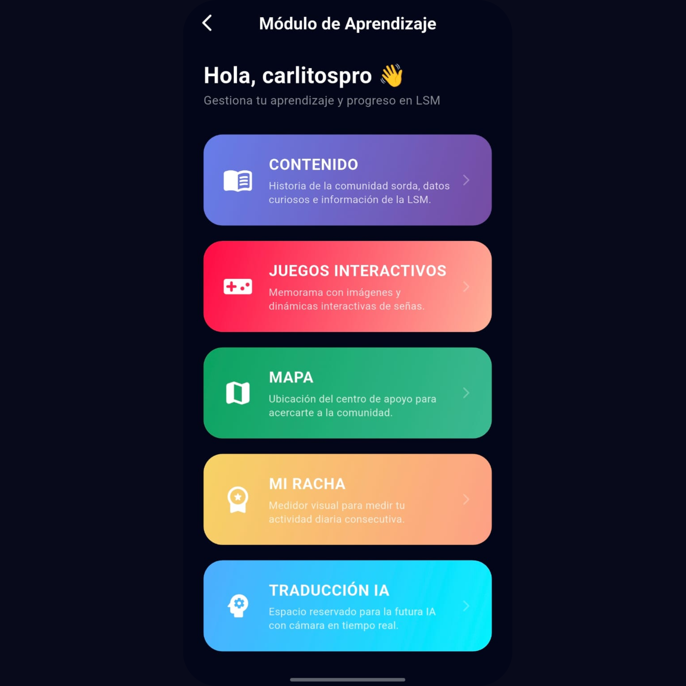
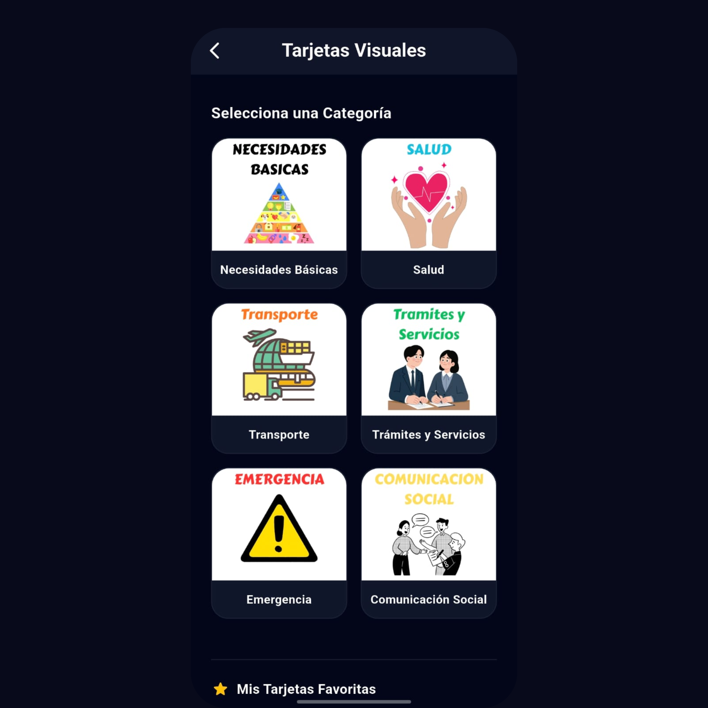
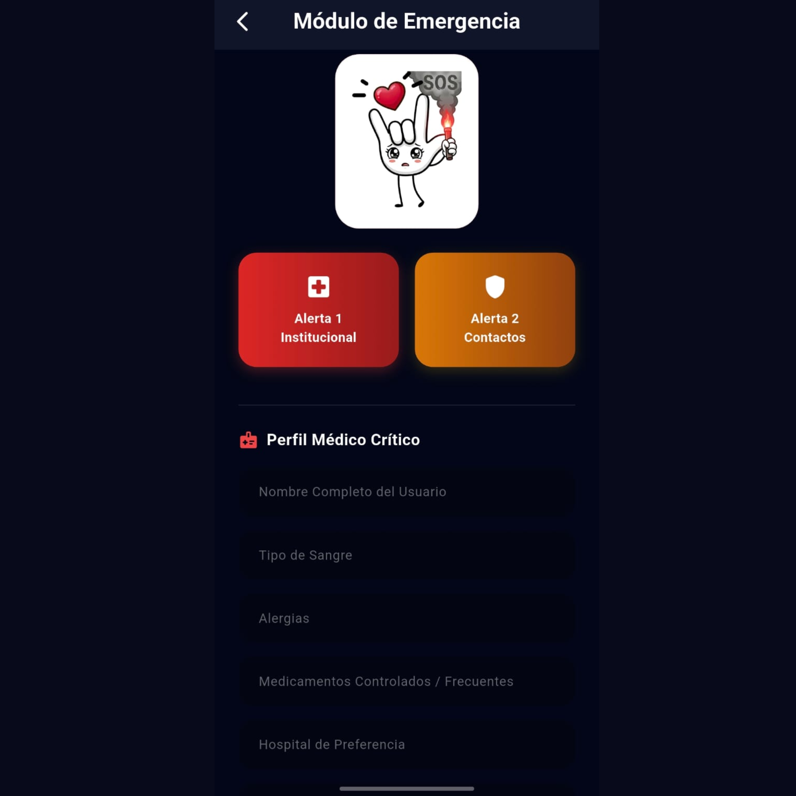

Ecosistema Tecnológico SICADEL
Sistema Integral de Comunicación, Apoyo, Difusión y Emergencia para la Lengua de Señas Mexicana
Un entorno de software modular diseñado de forma híbrida y con capacidad de operación 100% offline para erradicar las asimetrías comunicativas y proteger la vida, la autonomía y la identidad cultural de la comunidad sorda en México.
Explorar Ecosistema ModularHistoria de la Lengua de Señas Mexicana
1867: El Decreto de Juárez
Bajo el mandato presidencial de Benito Juárez se fundó formalmente la Escuela Nacional de Sordomudos. Este hecho histórico permitió unificar modismos emergentes con bases estructuradas de la Lengua de Señas Francesa, fijando los cimientos de la identidad lingüística de la comunidad en el país.
Una Estructura Gramatical Propia
La LSM posee su propia gramática, sintaxis y vocabulario completo. No es una simple mímica ni un deletreo manual del español. Es una lengua viva que utiliza el espacio tridimensional y las microexpresiones faciales para dar significado morfológico completo.
2005: Reconocimiento como Lengua Nacional
El 10 de junio de 2005 se marcó el hito legal definitivo: la LSM fue declarada oficialmente por ley como una Lengua Nacional de México, equiparando su estatus jurídico al de las lenguas indígenas y el español dentro del patrimonio lingüístico nacional.
La Solución en el Siglo XXI
A pesar de su amparo legal, la escasez crítica de herramientas interactivas offline perpetúa la exclusión. SICADEL rompe esta asimetría mediante módulos portables y visión artificial avanzada adaptados a las condiciones de conectividad del entorno real.
Enfoque Humano y Respeto a la Identidad
SICADEL rechaza tajantemente las perspectivas clínico-asistencialistas que intentan tratar a la sordera como una limitación médica que debe ser "corregida" obligatoriamente. El ecosistema abraza a la Lengua de Señas Mexicana como un patrimonio cultural valioso. La accesibilidad aquí no es sinónimo de caridad, y la inclusión no se edifica sobre la lástima; la ingeniería se despliega para empoderar la autonomía del usuario con la máxima dignidad.
Laboratorio de Visión Artificial Inteligente
Simulación interactiva del algoritmo desarrollado en Python y OpenCV. El sistema extrae 21 mallas tridimensionales (landmarks) para mapear la postura geométrica de la mano y realizar la traducción en tiempo real.
Arquitectura Modular Integrada
Cuatro ejes funcionales codificados de forma nativa en Flutter y Dart para cubrir todos los contextos de interacción social.
Módulo: INGRESAR Contenidos y Aprendizaje
Eje interactivo de difusión y pedagogía lúdica diseñado para masificar el conocimiento de la LSM tanto en usuarios como en la población oyente:
- Contenidos visuales: Materiales interactivos y lecciones multimedia guiadas.
- Gamificación: Zona de juegos, retos de puntaje y dinámicas para retener el aprendizaje.
- Preservación Cultural: Secciones dedicadas a modismos regionales y expresiones cotidianas.

Módulo: COMUNICACIÓN Interacción Inmediata
Diseñado para mitigar la fricción comunicativa en entornos reales sin intermediarios artificiales complejos:
- Tarjetas de Contexto Inmediato: Mensajes de alto contraste orientados a trámites públicos y transporte.
- Categorización Lógica: Estructuras de comunicación rápida divididas en salud, compras y social.
- Sincronización Local: Lógica offline completa para agilizar la interacción en áreas sin señal.

Módulo: EMERGENCIA Seguridad y Rescate Offline
La defensa crítica del usuario ante incidentes graves o catástrofes naturales (Inspirado en el impacto del Huracán Grace en 2021):
- Perfil Médico Cifrado: Datos vitales, alergias y contactos de emergencia guardados en almacenamiento local.
- Código QR Portable Físico: Renderizado de datos médicos en un QR físico en llaveros o pulseras legibles por paramédicos sin internet.
- Protocolos de Alerta Dual: Activación automatizada de avisos a contactos y cuerpos de auxilio médico.

Módulo: SERVICIOS VOLUNTARIOS Vinculación Humana
El puente social del ecosistema, rompiendo el aislamiento mediante redes colaborativas de apoyo civil:
- Red de Traductores Civiles: Enlace directo entre la comunidad sorda y voluntarios intérpretes acreditados.
- Asistencia Comunitaria: Herramientas de apoyo colaborativo para acompañamiento en trámites complejos.
- Ecosistema Colaborativo: Conexión segura e híbrida gestionada de forma centralizada con MongoDB Atlas.

Modelo de Sustentabilidad Institucional (SaaS)
Garantizando un esquema donde el acceso para la comunidad sorda es de $0.00 MXN Gratitud Permanente, las licencias corporativas financian el ecosistema.
Punto de Atención Accesible
Para comercios y escuelas privadas
- Kit de tarjetas contextuales
- Certificación de Espacio Inclusivo
- Interfaz web personalizada
Emergencia y Salud Segura
Recomendado para Clínicas y Hospitales
- Lector de API Offline para QR
- Cifrado de datos médicos
- Soporte y actualizaciones críticas
Gobierno Inclusivo
Para Municipios y Protección Civil
- Cuentas administrativas ilimitadas
- Capacitación LSM integrada
- Panel de control de Voluntariado
Contacto de Desarrollo e Integración Institucional
Para vinculación académica, adquisición de licenciamiento B2B/B2G o soporte del ecosistema modular, comuníquese directamente con la dirección del proyecto:
Alineación Estratégica con la Agenda 2030 ONU
SICADEL impacta directamente en 6 Objetivos de Desarrollo Sostenible institucionales:
Salud y Bienestar
Educación de Calidad
Reducción Desigualdades
Ciudades Sostenibles
Paz y Justicia
Alianzas Estratégicas